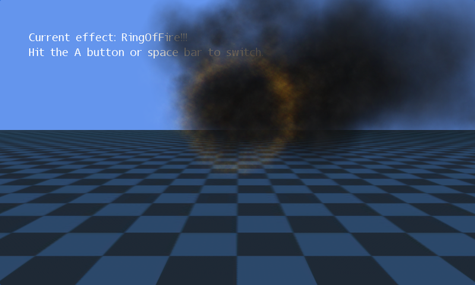

3D Particles
Ported from Microsoft's XNA 4.0 3D Particles sample.
Source for this sample on GitHub ↗

Play ▸Opens in a new tab.
About this sample
Five GPU particle systems share a compiled effect to draw explosions, projectile trails, smoke and fire over a 3D grid. Switch scenes to see a smoke plume or a ring of fire; orbit and zoom the camera to examine the particles from different angles.
Controls
| Action | Keyboard | Gamepad |
|---|---|---|
| Switch effect | Space | A |
| Orbit camera | Arrow keys or W/A/S/D | Right stick |
| Zoom out / in | Z / X | Left / right trigger |
| Reset camera | R | Press right stick |
| Exit | Escape | Back |